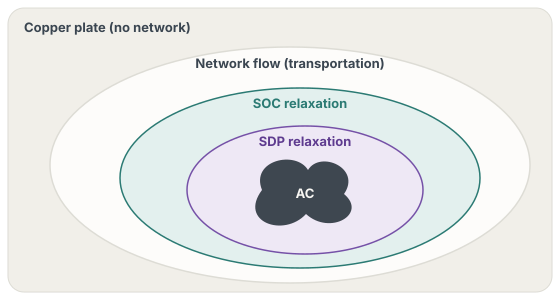

01 · DesignThe network formulation is an argument, twice
Any network formulation in one multistage model
The package builds an SDDP.jl policy graph whose stage problems are instantiated by PowerModels.jl inside each subproblem, with the network formulation and the problem builder passed as arguments (model_constructor_grid, post_method). The hydro layer is written once on top of whatever network PowerModels returns: reservoir volumes with bounds and violation penalties, turbined outflow and spillage along cascades, sampled inflows, hydro generation tied to the network's generator variables, and load shedding at a deficit cost. The formulations are those of PowerModels.jl, from polar AC power flow and its semidefinite, second-order-cone and quadratic-convex relaxations to the DC approximation, with or without losses, and the network-flow model.
A study of network models then becomes a sweep over one argument: The data, the inflow scenarios, the hydro constraints and the SDDP configuration stay fixed while only the network changes. The policy graph and the network builder are themselves arguments (build_graph, build_opf_model), so discounting, cyclic graphs or a custom grid model enter the same way.

Cuts on one formulation, operation on another
The planning and operating formulations, and their solvers, are separate parameters: model_constructor_grid_backward and model_constructor_grid_forward, optimizer_backward and optimizer_forward. When they differ, the package builds two policy graphs over the same data. Training runs SDDP with the backward pass on the planning graph, where the cuts are computed, and the forward pass on the operating graph, where the visited states are generated; after each iteration the cuts are copied to the operating graph. Simulation operates the operating graph with those cuts. In the notation of Planning and Realization Mismatch, each operated stage solves
with the cuts of \(\widehat{\mathcal V}_{t+1}\) computed on \(\mathcal Y^{\mathrm{plan}}\) at the states that operation visits.
The quality of a simplified planning model is the cost it induces on the system that is operated. Measuring that cost requires exactly this pairing, and making it a parameter turns the assessment of any planning model against any operating model into one run.

A baseline for learned policies
The same pairing is the stochastic dual dynamic programming baseline against which Policies for Multistage Decisions compares trained policies: cuts computed on the second-order-cone relaxation or on the DC approximation, with forward passes and evaluation under AC power flow. The hydro case of DecisionRules.jl reads the package's input format, a PowerModels network file, a reservoir file and an inflow table, so the learned policy and SDDP see identical data.
Solutions in PowerModels' terms
Inputs are a PowerModels network file and a reservoir file, validated against JSON schemas. Each simulated stage returns the PowerModels solution, with generation, flows, voltages and nodal multipliers, together with the reservoir trajectories, so prices and flows are compared across formulations directly. A statistical stopping rule, SimulationStalling, ends training when a t-test cannot distinguish the simulated costs of successive policies.
02 · ExamplePlan on DC power flow, operate under AC
The example below follows the package's three-bus inconsistency example: cuts are computed on the DC approximation with a linear solver, while forward passes and the final simulation run the polar AC model with a nonlinear solver.
using HydroPowerModels, HiGHS, Ipopt
data = HydroPowerModels.parse_folder("testcases/case3") # PowerModels.json, hydro.json, inflows.csv
params = create_param(;
stages = 12,
model_constructor_grid = DCPPowerModel, # planning: computes the cuts
model_constructor_grid_forward = ACPPowerModel, # operation: visits states, realizes costs
post_method = PowerModels.build_opf,
optimizer = HiGHS.Optimizer,
optimizer_forward = optimizer_with_attributes(Ipopt.Optimizer, "tol" => 1e-6),
stage_hours = 24 * 30,
)
m = hydro_thermal_operation(data, params)
HydroPowerModels.train(m; iteration_limit = 100)
results = HydroPowerModels.simulate(m, 100) # 100 scenarios operated under AC
results[:simulations][1][1][:objective] # stage-1 cost of the first scenarioDropping the forward arguments plans and operates on the same model. Changing model_constructor_grid to another formulation, such as SOCWRPowerModel with a conic solver, while keeping the AC forward model, gives the next point of the comparison.
03 · ResearchWhere the package carries the theory
- Planning and Realization Mismatch. The comparison of planning network models under AC operation is a sweep over the planning formulation with the operating formulation held at AC power flow.
- Policies for Multistage Decisions. The SDDP baselines of the hydrothermal comparison compute cuts on the conic relaxation or the DC approximation and operate under AC power flow, the paired configuration of this package.
04 · CitationHow to cite
The package was developed as part of the author's master's thesis. Its repository asks users to cite the package paper:
@article{rosemberg2019hydropowermodels,
title = {HydroPowerModels.jl: A Julia/JuMP Package for Hydrothermal Economic Dispatch Optimization},
author = {Rosemberg, Andrew and Street, Alexandre and Garcia, Joaquim Dias and Silva, Thuener and Vallad{\~a}o, Davi and Dowson, Oscar},
journal = {JuliaCon Proceedings},
volume = {1},
number = {1},
pages = {35},
year = {2019},
doi = {10.21105/jcon.00035}
}For the assessment of planning network models under AC operation:
@article{rosemberg2021assessing,
title = {Assessing the Cost of Network Simplifications in Long-Term Hydrothermal Dispatch Planning Models},
author = {Rosemberg, Andrew W. and Street, Alexandre and Dias Garcia, Joaquim and Vallad{\~a}o, Davi M. and Silva, Thuener and Dowson, Oscar},
journal = {IEEE Transactions on Sustainable Energy},
volume = {13},
number = {1},
pages = {196--206},
year = {2022},
doi = {10.1109/TSTE.2021.3106810}
}